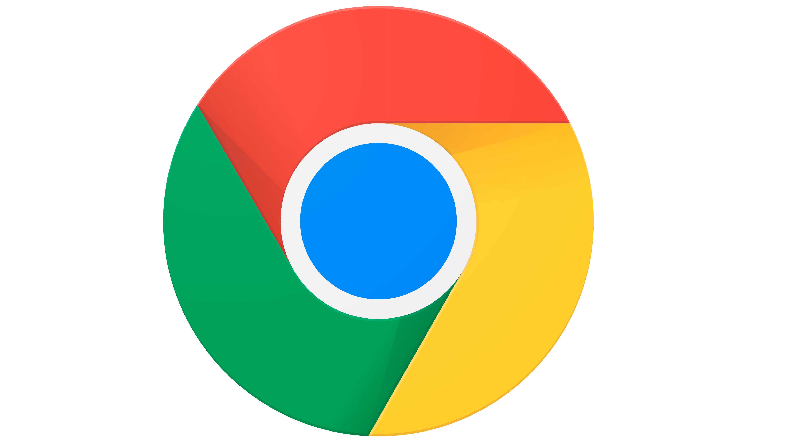

<!DOCTYPE html>
<html lang="en">
<head>
    <meta charset="UTF-8">
    <meta http-equiv="X-UA-Compatible" content="IE=edge">
    <meta name="viewport" content="width=device-width, initial-scale=1.0">
    <title>Try Windows 11</title>
    <link rel="stylesheet" href="css/style.css">
    <link rel="shortcut icon" type="image/jpg" href="favicon.ico"/>
</head>
<body>
    <!-- <div class="icons">
        
        <div>Google Chrome</div>
        
        
    </div> -->
    <div class="taskbar">
        
        
    </div>
    <div class="startmenu">
        
    </div>
    <video autoplay muted>
        <source src="assets/vid/video.webm" type="video/webm">
    </video>
    
</body>
<script src="js/script.js"></script>
</html>

